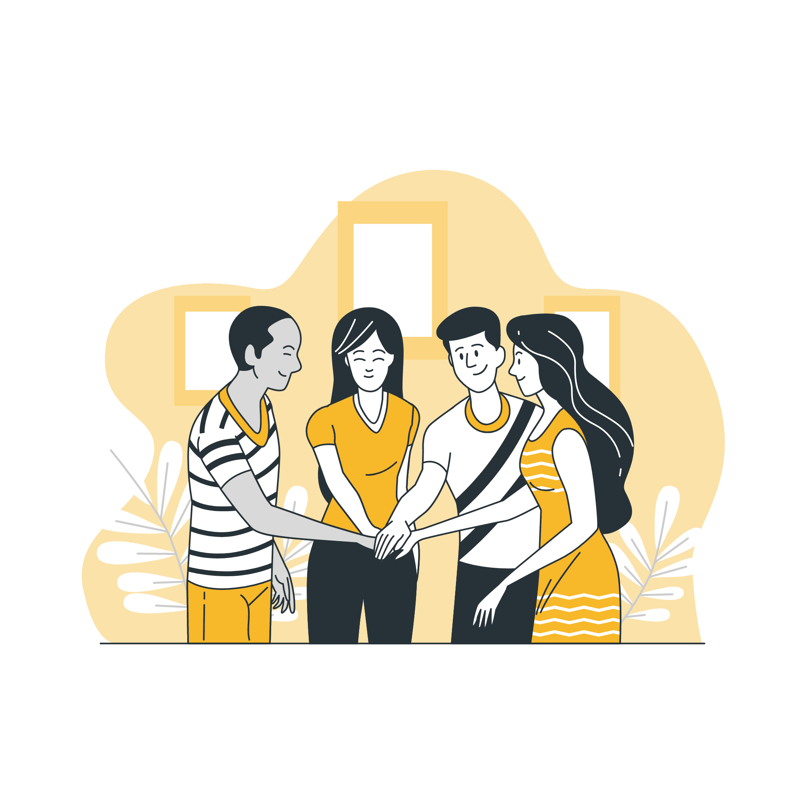
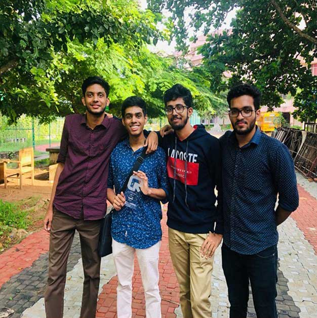
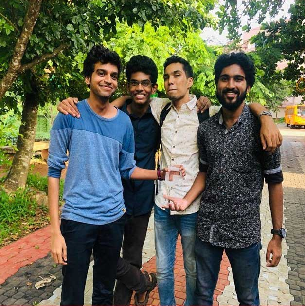

YOU'VE BEEN TINKER-ROLLED! 🕺
Rick Astley honors your curiosity! Now get back to coding!
Why we exist, how we escaped the classroom blackboard, and the humans who built this community over the years.
The idea behind a community like TinkerHub is for students to get exposed to tech, real developer tools, and inspiring people outside of the rigid academic curriculum.
What an engineer faces when stepping out of college is a hyper-competitive world. Without practical exposure to Git, modern cloud platforms, AI models, and real hardware, making a name for oneself is hard. TinkerHub bridges that gap by encouraging open-source contributions, maker hackathons, research papers, and patent filings.
The defining separator of TinkerHub CET is that it is an open community for all with absolutely zero barriers to entry.
No GPA cutoffs, no entrance test, no gatekeeping. If a final-year CS student knows how to build a microservices cluster, they mentor a first-year Mechanical student who wants to build an automated lawnmower. Learning here is natural, spontaneous, and shared over canteen tea.
From virtual late-night Discord calls to a thriving campus maker culture.
BitFlip Hackathon launches on Devfolio with 106 hackers, 12 national sponsors, and 9 groundbreaking student projects built in isolation during lockdown.
Sudev Suresh Sreedevi crafts the official Designers' Handbook, formalizing the #FFCD10 and #205B67 color palette, checkerboard feed, and 720×1280 status guidelines.
Physical campus meetups resume. Maker Kootam launches hands-on hardware sprints, IoT hack nights, and peer mentoring sessions across all engineering branches.
The website is completely reimagined in 3 hours for Drishti 2026, celebrating fun, craft paper aesthetics, and fluid interactions.
Authentic polaroids from the TinkerHub CET archives honoring previous leads, achievers, and core contributors.


